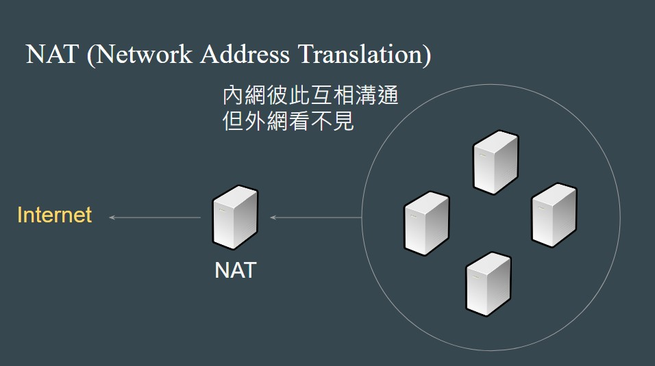
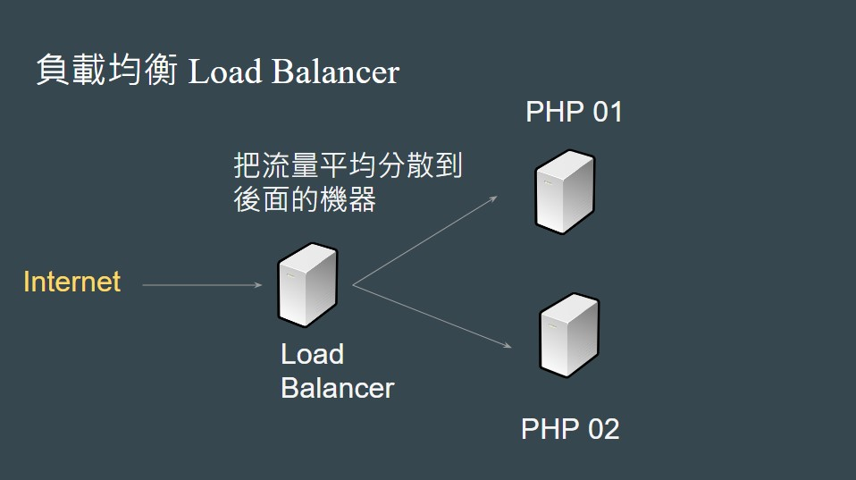
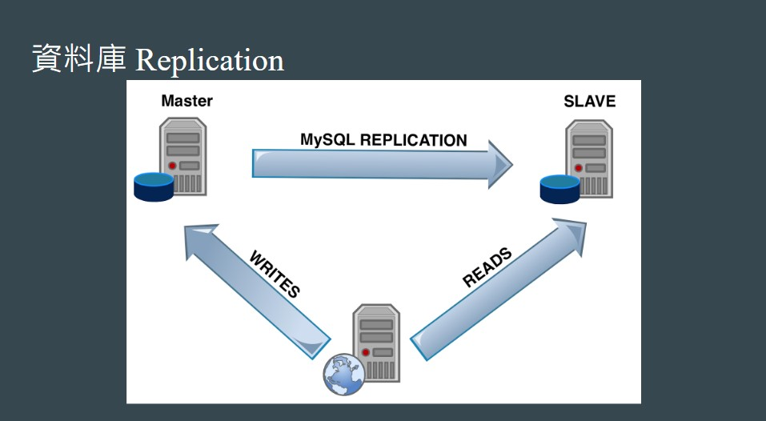
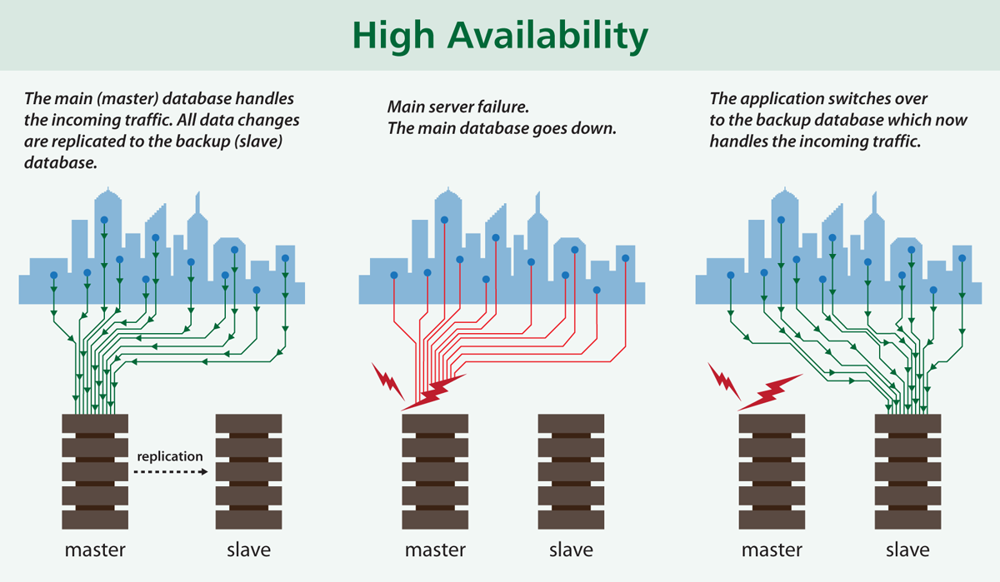

後端的世界也是博大精深。
簡述
這邊會補充一些後端 Server 如何運作的相關知識。看完後希望你能知道這些關鍵字的涵義：
- NAT 是什麼
- Load Balance 是什麼
- Replication 是什麼
NAT（Network Address Translation）
一個公司裡面通常有很多台 Server 在跑，可是你實際跟 Server 連線時看起來都只有連到一個對象，這是為什麼呢？

其實這邊跟「內網」和「外網」的概念很像，公司內的 Server 彼此會透過內網 IP 來溝通，但對外要透過一台「機器」來跟外面的網路世界做溝通，這個機器就是「NAT」。
這裡的 例子 不錯，節錄一段內容：
假設台大電機系的網管人員將網路切割為內部與外部，內部網路的網址設定為 192.168.1.1、192.168.1.2、192.168.1.3；而外部網路的網址為 140.112.66.88，則 NAT 伺服器的功能就是更改封包表頭的傳送端 IP 位址與接收端 IP 位址。
所以呢，從外網沒辦法看到裡面有幾台 Server，而內網也看不到外面的世界。
最後附個懶人包，NAT 的功能有什麼：
- 重新封裝 IP，例如 192.168.1.1 變成 140.112.66.88
- 封包過濾，可以攔截一些惡意封包
- 負載均衡，把資源分散到不同 Server，減輕負擔
負載均衡（Load Balance）

當流量很大的時候，把流量分散到不同的 Server，減輕負擔。
好處有：
- 減輕 Server 負擔
- 如果 PHP01 爆了，還有 PHP02 能撐
資料庫 Replication

讀寫分離、從屬架構
簡單來說，可以把資料庫建立從屬關係
- Master 負責處理「寫入資料」的資料庫
- Slave 負責處理「讀取」資料的資料庫
當你在寫資料到 Master 時，MySQL 會透過 Replication（複製）機制，讓 Master 和所有 Slave 之間的資料同步。
這樣的好處是資料庫負擔不會那麼重，因為「讀跟寫是分開的」。另外雖然上面的圖只畫出一台，但實際上 Master 和 Slave 可以有多個（應該啦），所以又可以在透過這種方式來降低負擔。
資料庫高可用性 High Availability

其實就是剛剛的從屬架構來做延伸：
假設 Master 壞掉了，就先把流量轉給 Slave，利用這段期間修復 Master。
總之呢，不管是前面提的 Load Balance 還是 Replication，重點都只有一個：
永遠要有兩台以上的機器來預防突發狀況
記住這點就好了。